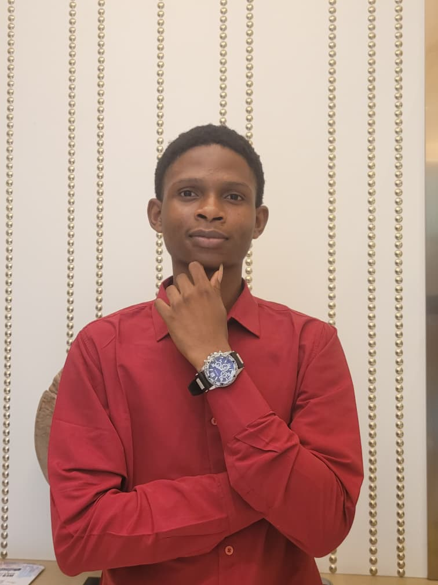
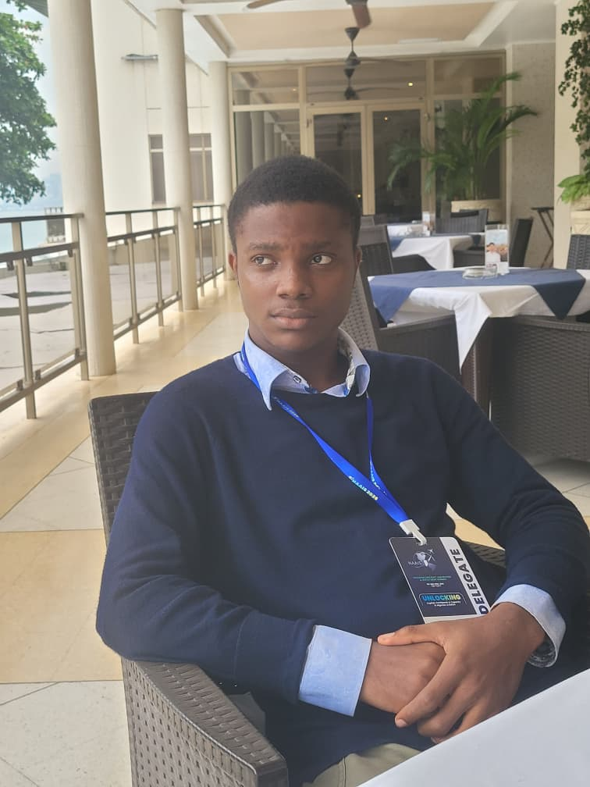

RC No:8603153
Welcome to LiftOra Ltd Welcome to LiftOra, a leader in aviation and advanced technology solutions. We design, develop, and deliver innovations that elevate industries and transform the way the world moves. Our focus is on precision engineering, cutting-edge systems, and sustainable solutions for the future. At LiftOra, ideas are engineered into reality, from concept to execution. We are committed to excellence, innovation, and shaping the next generation of aerospace and technology. Welcome to a future where possibilities take flight.
Welcome to LiftOra Ltd, a leading innovator in aviation and advanced technology. While our founding team began collaborating in October 2024, the company was officially established on March 25, 2025, with a clear vision: to redefine the future of aerospace and technological solutions in Nigeria and beyond. LiftOra Ltd operates at the intersection of engineering, innovation, and strategic problem-solving. Our core focus areas include aircraft design, aerospace systems, embedded electronics, and next-generation technology solutions. By combining research-driven engineering with creative design, we deliver solutions that are safe, efficient, sustainable, and future-ready. Our mission is to turn visionary ideas into reality. From the initial concept to prototyping and full-scale implementation, LiftOra leverages cutting-edge technologies and expert knowledge to develop systems that meet the highest industry standards. Every project we undertake reflects our commitment to precision, reliability, and innovation. At LiftOra, we value collaboration, creativity, and continuous learning. Our diverse team of engineers, designers, and technologists work together to push the boundaries of what is possible in aviation and technology. We actively explore new opportunities, integrate emerging technologies, and deliver solutions that elevate industries, empower professionals, and inspire the next generation of aerospace innovators. Since its inception, LiftOra has been dedicated to shaping the aerospace landscape, driving technological advancements, and fostering a culture of excellence. We aim to not only build cutting-edge systems but also create a lasting impact on education, research, and industrial development in aviation and technology sectors. LiftOra Ltd is more than a company—it is a visionary platform where imagination meets engineering, innovation meets execution, and the sky is just the beginning.
Leading the way in UAVs, drones, and aerospace systems with advanced, practical designs that push the boundaries of aviation technology.
Developing aerospace solutions that reduce environmental impact while maintaining performance and innovation standards.
Competing in and winning international aerospace and technology competitions to showcase LiftOra’s expertise worldwide.
Mentoring the next generation of aerospace professionals in Nigeria and Africa to create skilled innovators for the future.
Building real-world deployable aerospace and tech solutions that solve practical problems in aviation and technology industries.
Developing in-house aerospace components and systems to ensure high-quality production, efficiency, and innovation in engineering processes.
Innovating UAV and aerospace solutions to support national defense, security, and strategic aerospace projects.
Engaging in space projects, including satellites and orbital systems, to expand LiftOra’s footprint in the global space sector.

Emmanuel I. Oluwafemi (FNG) Emmanuel I. Oluwafemi is an Aerospace Engineering undergraduate and the Founder of LiftOra Ltd, a company dedicated to advancing aviation and technology through innovation and engineering excellence. He is also the Founder and President of the National Aerospace Students Society (NASS), where he leads initiatives aimed at uniting, developing, and empowering aerospace students across Nigeria and Africa. With a strong passion for aerospace systems, aircraft design, and emerging technologies, Emmanuel is driven by the vision of building solutions that shape the future of aviation. His interests span across flight systems, engineering design, technology integration, aviation policy, and aviation management, positioning him at the intersection of innovation, leadership, and real-world application. In addition to his aerospace expertise, Emmanuel is a cloud engineer, leveraging modern computing technologies to develop scalable, intelligent, and integrated solutions. He also serves as Vice President within ASHRAE, contributing to engineering development, collaboration, and professional growth within the engineering community. Through his leadership roles, technical skills, and forward-thinking mindset, Emmanuel continues to inspire innovation, promote technical excellence, and create opportunities for the next generation of engineers. He is committed to building globally competitive solutions, advancing aerospace development in Nigeria, and shaping the growth of the aviation and technology industry on a global scale.
John Goodness Enejo is a Co-Founder of LiftOra Ltd and an Aerospace Engineering student with a strong passion for innovation and technology. He plays a key role in the development of ideas and technical solutions within the organization. With a focused interest in avionics and aerospace systems, John is dedicated to understanding and building the electronic and control systems that power modern aircraft. His passion for precision and functionality drives his contributions to engineering and system design. Beyond aerospace, John is also a skilled web developer and writer, combining technical knowledge with creativity to build digital solutions and communicate complex ideas effectively. His multidisciplinary approach allows him to bridge the gap between engineering, technology, and communication. Committed to continuous learning and innovation, John aims to contribute to the advancement of aerospace technology while developing solutions that have real-world impact.
Oloko Abdul-Kabir Adekunle Oloko Abdul-Kabir Adekunle is a Co-Founder of LiftOra Ltd and an Aerospace Engineering student with a strong commitment to innovation and technical development. He is also the Vice President 1 of the National Aerospace Students Society (NASS), where he plays a key role in supporting leadership and coordinating initiatives within the organization. With a focused interest in propulsion systems and aerospace research, Abdul-Kabir is passionate about understanding and advancing the technologies that drive aircraft and space systems. He is also a skilled Python developer and proficient in engineering tools such as ANSYS and SolidWorks, enabling him to design, simulate, and analyze complex aerospace systems effectively. Through his involvement in both LiftOra and NASS, he continues to build his expertise while contributing to projects that aim to shape the future of aerospace engineering. His goal is to be part of groundbreaking advancements in propulsion and aerospace innovation, combining technical skill with practical engineering solutions.

Adegbola Johnbeulah Boluwatife is a Co-Founder of LiftOra Ltd and an Aerospace Engineering student with a strong passion for aviation and flight. He has a growing interest in piloting and the practical aspects of flying, driven by his enthusiasm for understanding aircraft operations and performance. He serves as a Committee Manager within the National Aerospace Students Society (NASS), where he contributes to organizing and coordinating key activities and initiatives. In addition to his aerospace interests, Adegbola is a skilled front-end and back-end developer, as well as a graphic designer and editor. His diverse skill set allows him to contribute creatively and technically, supporting both the digital and visual development of projects within LiftOra. With a strong blend of technical ability and creativity, he is committed to continuous growth and aims to contribute meaningfully to the advancement of aviation and technology.
Adegende Emmanuel Abiodun is a Founding Executive of LiftOra Ltd and an Aerospace Engineering student with a strong interest in aviation economics and industry development. He plays an important role in supporting the foundation and growth of the organization. With a focus on aviation economics, Emmanuel is passionate about understanding the financial, operational, and strategic aspects of the aviation industry. His interests include airline operations, market structures, and the economic factors that influence aviation growth and sustainability. Through his involvement in LiftOra, he contributes to building a well-rounded perspective that combines engineering with economic insight, helping to shape solutions that are not only innovative but also viable and impactful within the aviation sector.
Onwubolu-Ezekiel Joel is a Founding Executive of LiftOra Ltd and an Aerospace Engineering student with a strong interest in aircraft maintenance and engineering support systems. He plays a key role in contributing to the development and growth of the organization. With a focus on aircraft maintenance, Joel is passionate about ensuring the safety, reliability, and efficiency of aircraft operations. His interests include maintenance practices, inspection systems, and the technical processes required to keep aircraft in optimal condition. Through his involvement in LiftOra, he is committed to building expertise in maintenance engineering while contributing to solutions that enhance safety and operational performance within the aviation industry.
Amaihian Ebenezer Oseghale is a Founding Executive of LiftOra Ltd and an Aerospace Engineering student with a strong passion for innovation and technological advancement. He contributes to the growth and development of the organization through his commitment to research and forward-thinking ideas. With a keen interest in aircraft and aviation technology, Ebenezer is focused on understanding aircraft systems, performance, and design, while exploring new approaches to engineering challenges. His curiosity and dedication position him as a key contributor to innovative projects within LiftOra. Through his involvement, he continues to build his expertise while playing an active role in shaping solutions that advance aviation and technology.
The VTOL UAV project focuses on developing drones capable of vertical take-off and landing for both urban and remote environments. LiftOra engineers are improving flight stability, efficiency, and payload capacity. This project demonstrates our expertise in advanced aerospace engineering and practical drone applications.
LiftOra participated in international sustainability competitions to showcase innovative aviation and technology solutions. Our entries emphasized eco-friendly materials, energy efficiency, and reducing carbon footprint in aerospace projects. This highlights our commitment to sustainable aviation development worldwide.
LiftOra took part in Airbus’ global “Fly Your Ideas” challenge, designing creative and technically sound aerospace solutions. Our team presented concepts combining innovation with practical engineering, earning recognition for problem-solving and originality. This achievement strengthened LiftOra’s presence in global aviation innovation networks.
LiftOra won the Drone Soccer Challenge organized by the Federal Airports Authority of Nigeria. Our team demonstrated precision drone control, teamwork, and real-time strategic coordination. This victory showcased LiftOra’s UAV expertise and positioned us as a leader in innovative drone technologies in Nigeria.
Email: liftoraaa@gmail.com
Phone: +234 7036887633 +234 9068800564 +234 8147884720